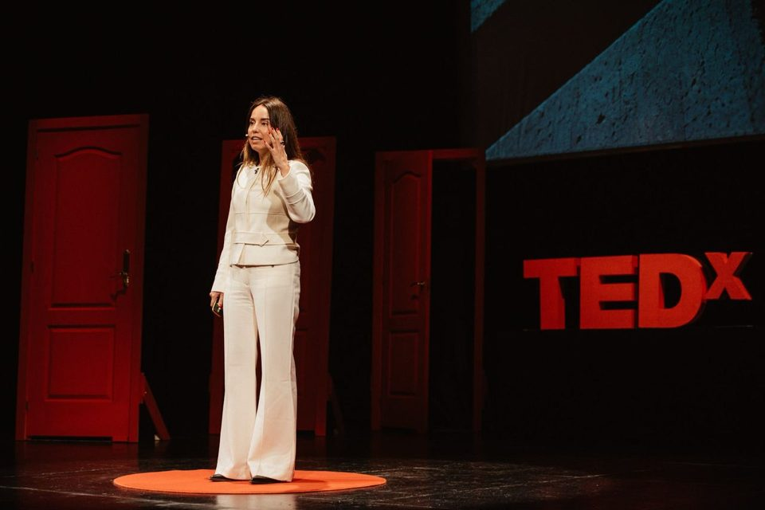
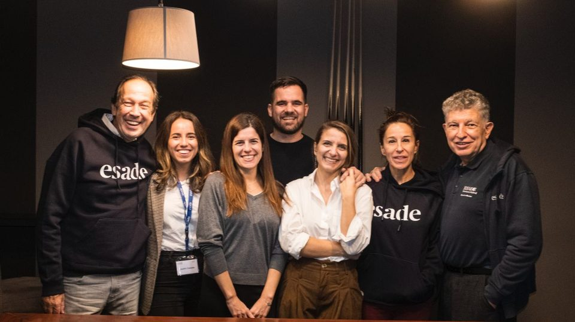
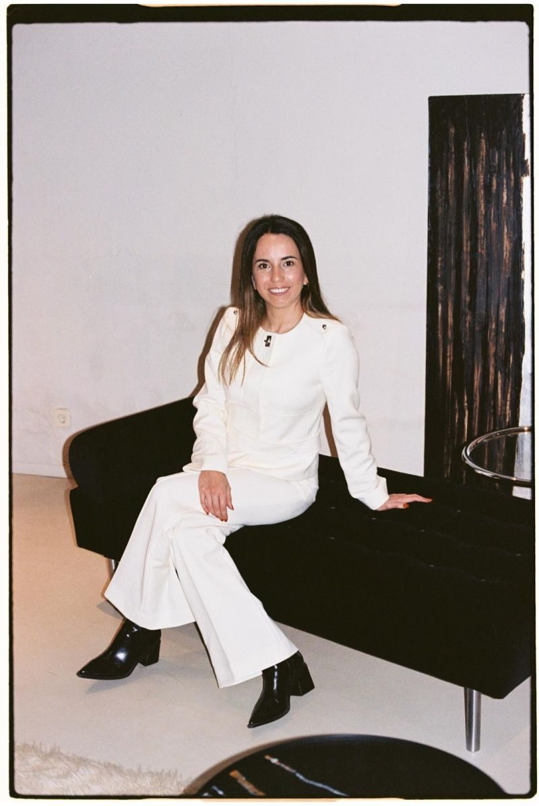
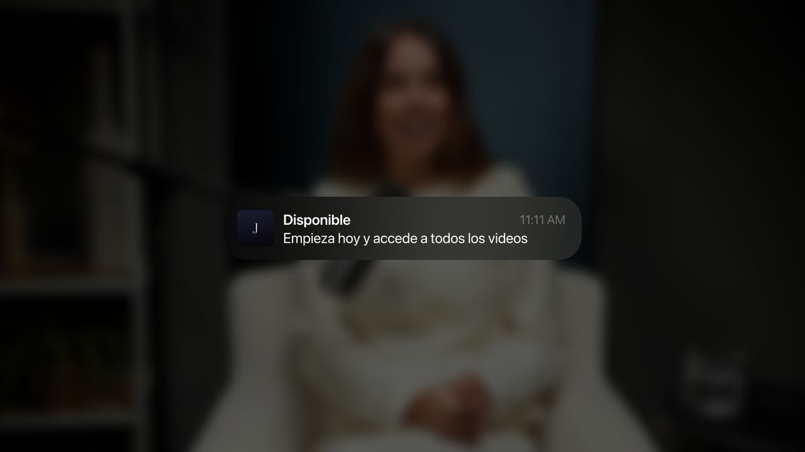
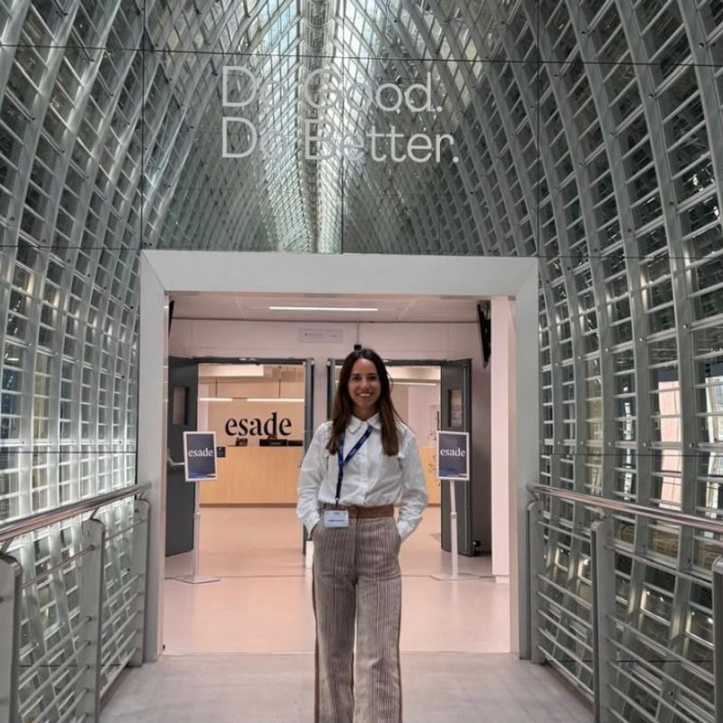

Te enseñaré a impulsar tu carrera profesional y hacerte más visible con mi método de confianza en 10 días.
El workshop completo de confianza, donde hablaremos de cómo conseguir más en menos tiempo.
+500 profesionales acompañados · 4,8/5
Esto es para ti si…
- Sientes que tienes que saberlo todo y ser perfecta, y sostener esa imagen te deja sin energía.
- Te imaginas los peores escenarios posibles en tu cabeza antes de entrar a cualquier interacción profesional.
- Cada emoción que tienes la interpretas como una prueba de que “no estás preparada”.
- Necesitas la validación de otros para fiarte de tu criterio.
- Vives agotada con la ansiedad, pero en el fondo sientes que, si lo arreglas, puedes volar.
Si te sientes así, no te preocupes: yo me sentía igual.
-
01
Me temblaban las manos delante de 300 personas.
Hoy doy conferencias, incluso una charla TED.

-
02
No servía para la universidad.
Hoy soy profesora en varias universidades.

-
03
Mi inglés no era bueno.
Hoy trabajo y doy clases en inglés todos los días.
-
04
Entré en el sector de la belleza cubriendo una baja de maternidad.
Hoy soy directora general.

-
05
Mi confianza dependía de que alguien me felicitara.
Hoy depende de mí.
Lo que trabajamos en 10 días
11 lecciones grabadas + ejercicios prácticos, repartidas en 10 días de trabajo. Para que vayas a tu ritmo y sin caducidad.
Día 1La confianza es un hábito y así se entrenaTráiler gratis
¿Quieres ver el resto?
La vista previa ha terminado. Únete a la lista de espera y te avisamos en cuanto abran las plazas.
Unirme a la lista de esperaLas personas seguras nunca nacen: se hacen con la experiencia. Este va a ser tu primer paso para empezar a entrenar la confianza.
Día 2Deja de interpretar un personaje

En el trabajo eres “la fuerte”, la que nunca duda, pero en el fondo sabes que mantener ese papel te agota. Necesitas aprender a actuar siendo la versión más auténtica de ti, y aquí te explico cómo hacerlo.
Disponible al inscribirte
Día 3Dirige la película de tu mente
Día 4Pasa de juzgarte a ti misma a entrenarte para sentirte mejor
Día 5Calma tu cuerpo en segundos: el hilo plateado
Día 6Aprende a gestionar tus emociones para que no te saboteen
Día 7Cómo dejar de buscar la validación externa y construirla desde dentro
Día 8Entiende cómo tus creencias condicionan tu realidad
Día 9Cómo construir la confianza actuando
Las herramientas que vas a entrenar
- Crea tu realidadCambia la imagen que proyectas ante una situación importante.
- De juez a entrenadorPasa de una voz interna que te juzga a una que te entrena.
- Incrementa tu focoCalma tu cuerpo en segundos cuando notas la tensión.
- El semáforo emocionalLee tus emociones como información, no como órdenes.
- Cree en tiDeja de buscar validación externa y decide desde tu propio criterio.
Lo que dicen mis clientes
+ de 500 profesionales acompañados
★★★★★
“Pensaba que la confianza era algo que tenías o no tenías. El curso me hizo darme cuenta de que se entrena. Me ha ayudado especialmente a dejar de cuestionarme constantemente después de tomar una decisión.”
★★★★★
“Profesionalmente me iba bien, pero seguía teniendo la sensación de que en cualquier momento alguien descubriría que no era tan buena como pensaban. El curso me ayudó a entender de dónde venía esa voz y, sobre todo, a dejar de darle tanto poder.”
★★★★☆
“Diez días que me han hecho cuestionarme años de inseguridades. Ahora me observo de una manera completamente diferente y confío mucho más en mis decisiones.”
★★★★★
“El que més m’ha agradat és que no és el típic curs de ‘creu en tu i tot anirà bé’. Hi ha exercicis molt concrets que et fan adonar de comportaments que tens totalment automatitzats. M’he endut eines que continuo utilitzant.”
★★★★★
“Tengo un puesto de responsabilidad y nunca me había considerado una persona insegura. Sin embargo, haciendo el curso descubrí cuántas veces me hacía pequeña sin darme cuenta: justificándome demasiado, sobrepreparándome o buscando validación antes de decidir. Ha sido revelador.”
★★★★★
“Hubo un ejercicio que me hizo llorar porque me di cuenta de la cantidad de años que llevaba hablándome de una forma que jamás utilizaría con otra persona. Para mí el curso ha sido mucho más que ganar confianza: ha sido empezar a estar de mi lado.”
★★★★★
“Llegué al curso en un momento en el que sabía que quería cambiar cosas profesionalmente, pero llevaba meses sin atreverme a dar el paso. En 10 días no desaparecen todos tus miedos, pero sí cambia muchísimo la forma en la que te relacionas con ellos. Para mí ese ha sido el gran aprendizaje.”
“El curso de Judith transmite una energía muy especial: cercana, natural y llena de vitalidad. Su forma de explicar genera confianza y ayuda a sentirse acompañado durante todo el proceso, y su motivación se contagia. Además, ofrece muchos consejos, herramientas y recursos para aprovechar el curso al máximo, y sus meditaciones son un espacio que se disfruta muchísimo. Una profesora excelente.”
“Trabajar con Judith ha supuesto un punto de inflexión en mi forma de liderar. No solo me ha ayudado a desarrollar herramientas para gestionar mejor a mi equipo, sino también a comunicar con más claridad, tomar decisiones con mayor seguridad y confiar más en mi criterio. Su capacidad para hacer las preguntas adecuadas y ofrecer una visión estratégica hace que cada sesión aporte un valor enorme.”
“Llegué a las sesiones con la sensación de estar estancado profesionalmente y con muchas dudas sobre cuál debía ser mi siguiente paso. Judith me ayudó a conectar con mi propósito, identificar qué era realmente importante para mí y definir un plan claro para llegar donde quería estar. Hoy tengo mucha más claridad, confianza y una hoja de ruta que me motiva a seguir avanzando.”

“Judith me ha dado una visión mucho más clara de mi futuro y, gracias a ello, he tomado las decisiones que llevaba tiempo posponiendo para empezar a pasar a la acción. Estoy muy contenta con todo el proceso, pero lo que más me ha sorprendido ha sido el cambio en mi confianza. En muy pocas sesiones he notado una transformación radical en la forma en la que me enfrento a los retos y tomo decisiones. Ha sido un antes y un después.”

“La preparación con Judith fue clave para reforzar las habilidades de liderazgo de nuestro equipo. Su enfoque práctico y estratégico nos dio herramientas aplicables desde el primer día para liderar con más confianza, claridad e impacto.”

Puedes seguir esperando o empezar hoy.
Los dos caminos tienen un precio. Solo uno te lleva a donde quieres estar.
Mi historia
Nadie debería decidir hasta dónde puedes llegar.
Crecí en Aitona, un pequeño pueblo de Lleida de apenas 2.000 habitantes. A los 16 años, una tragedia familiar cambió mi vida. Dejé de ser aquella estudiante que sacaba buenas notas y empecé a suspender. Entonces llegaron las palabras que, durante mucho tiempo, marcarían mi historia: «Tú no sirves para ir a la universidad».
Lo escuché de profesores. Incluso de personas de mi entorno más cercano.
Pero hay algo que he aprendido con los años:
Que alguien no sea capaz de ver tu potencial no significa que no exista.
Estudié Periodismo, trabajé en Televisión Española y, después de un proceso de transformación personal, decidí reinventarme profesionalmente y entrar en el mundo empresarial.
No tenía todos los conocimientos, ni todos los contactos, ni todas las respuestas. Hice un máster en inglés cuando todavía no dominaba el idioma. Entré en Revlon para cubrir una baja de maternidad y trabajé hasta las once de la noche el día que decidían si me quedaba.
Y me quedé.
Después vinieron nuevas responsabilidades, nuevos países, decisiones difíciles, un Executive MBA en ESADE y la oportunidad de liderar equipos y negocios internacionales.
Hoy ocupo una posición de dirección general, compagino mi carrera ejecutiva con la docencia universitaria y he cumplido uno de los sueños que llevaba más de diez años en mi vision board: subirme a un escenario TEDx.
Pero, si algo me hace sentir orgullosa, no son los cargos ni los títulos.
Es haber construido una vida que, a los 16 años, otros me hicieron creer que no estaba a mi alcance.
Y, sobre todo, haber entendido que el verdadero liderazgo no consiste únicamente en llegar lejos, sino también en ayudar a otros a descubrir hasta dónde pueden llegar.
Porque, a veces, todo empieza cuando alguien confía en ti antes de que tú seas capaz de hacerlo.

¿Vas a seguir esperando a sentirte preparada?
Workshop de Confianza
Gratuito
El workshop empieza en
Reserva tu plaza para el workshop en directo. Esto es lo que vas a llevarte:
- Mi método de 10 días
- Guía para hacerte más visible en el trabajo
- Ejercicios prácticos para aplicar diariamente
- Cómo eliminar la voz de la jueza interior
Falta pegar aquí el código del formulario de GHL.
Preguntas frecuentes
¿Cómo me podrías ayudar?
Te doy una guía de 10 días sobre cómo conseguir la confianza que te va a permitir obtener mejores resultados en tu vida profesional. Además, te va a dar más control sobre tu vida personal.
¿Esto funciona?
No te voy a prometer que tendrás confianza de un día para otro, porque eso no le pasa a nadie. Lo que sí te digo: si haces el trabajo cada día, vas a notar cambios en cómo actúas.
¿Es en directo o grabado?
Grabado: 11 lecciones grabadas + ejercicios prácticos, para que vayas a tu ritmo y sin caducidad.
¿Voy a tener más confianza en 10 días?
Notarás cambios en cómo actúas si haces el trabajo cada día. No se trata de dejar de sentir miedo, sino de que deje de decidir por ti.